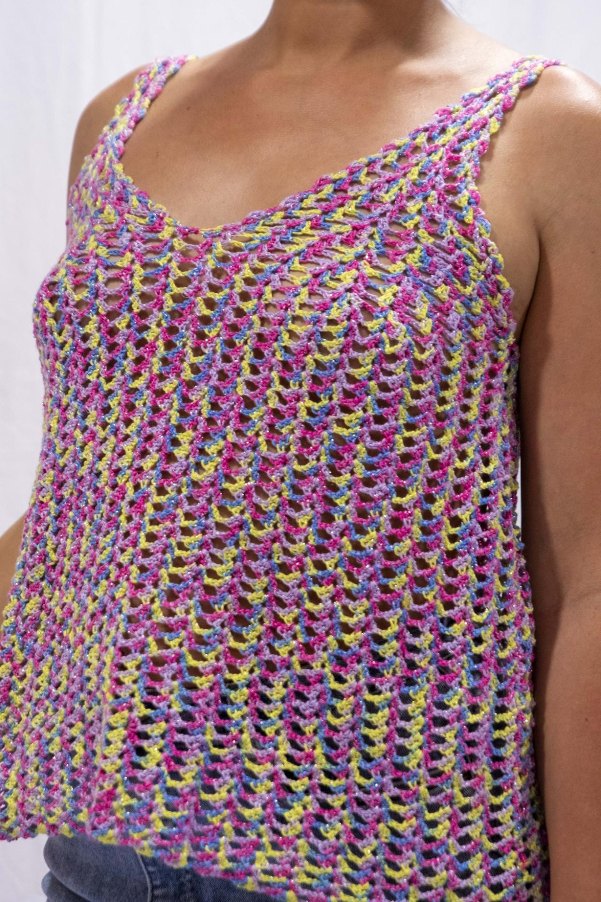

01 ✳
Être trouvé
Adresse, horaires, photos et services : une fiche à jour aide les clients du quartier à vous trouver et à vous appeler.
Voir les détails ↗Sites web · Google · Supports de communication
Je crée des sites et des supports pour les commerces, artisans et indépendants. L’objectif : présenter clairement votre activité et permettre à vos clients de vous trouver ou de vous contacter.
On part de votre activité et de ce dont vos clients ont besoin.
Vos horaires · Vos services
Offre de bienvenue VisiPro
Pour accompagner le développement de votre activité, profitez de 10 % de remise sur votre première prestation VisiPro.
Toutes les prestations sont éligibles, y compris les packs. Offre cumulable avec les packs jusqu’au 31 décembre 2026.
Une vitrine toujours ouverte
Horaires, adresse, photos, services, prise de contact : quand ces informations sont à jour et faciles à lire, vos clients savent tout de suite si vous êtes au bon endroit.
Mes services
On choisit ce qui est utile pour vous et pour vos clients.
Adresse, horaires, photos et services : une fiche à jour aide les clients du quartier à vous trouver et à vous appeler.
Voir les détails ↗Une plaque ou une carte QR/NFC permet à vos clients de laisser un avis en quelques secondes.
Voir les détails ↗Des menus et supports faciles à lire, avec les bonnes informations et le style de votre commerce.
Voir les détails ↗Un site clair, adapté au téléphone, où l’on trouve vos services, vos tarifs et vos coordonnées.
Voir les détails ↗Repères tarifaires
Deux formules de site pour situer votre budget, puis tous les tarifs détaillés.
Pour démarrer
À partir de 300 €
Une page professionnelle pour rassembler l’essentiel et permettre à vos clients de vous contacter.
Pour présenter votre activité
À partir de 590 €
Une présence professionnelle claire pour présenter votre entreprise et faciliter la prise de contact.
Projet client · Nîmes
Melle Tricote est une boutique artisanale de tricot et de crochet.
Des couleurs qui osent. Des textures qui réconfortent. Des créations faites à la main, pour être vous.

01 SITE WEB · BOUTIQUE EN LIGNE
Géraldine crée des pièces en tricot et crochet à Nîmes. Le site met les photos au premier plan, avec des catégories claires pour découvrir la boutique et une page dédiée à son atelier.
Comment ça se passe
Vous échangez directement avec moi. On définit le besoin, je prépare une première version, puis on l’ajuste avec vos retours.
On en parle ? ↗Vous m’expliquez votre activité et ce que vous aimeriez améliorer.
Vous recevez une proposition claire, avec le contenu, le délai et le prix.
Vous me dites ce qui vous convient ou ce qu’il faut changer. On finalise ensemble.
Contact
Décrivez-moi votre activité et ce dont vous avez besoin. Je vous répondrai directement.